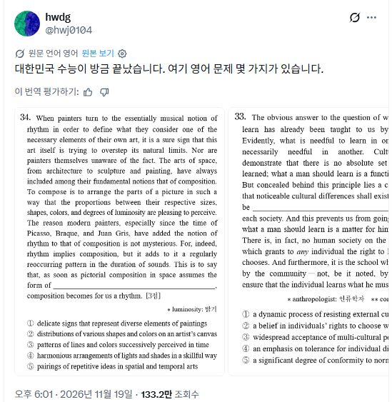
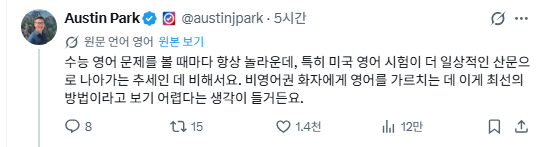
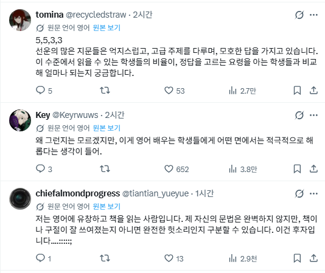
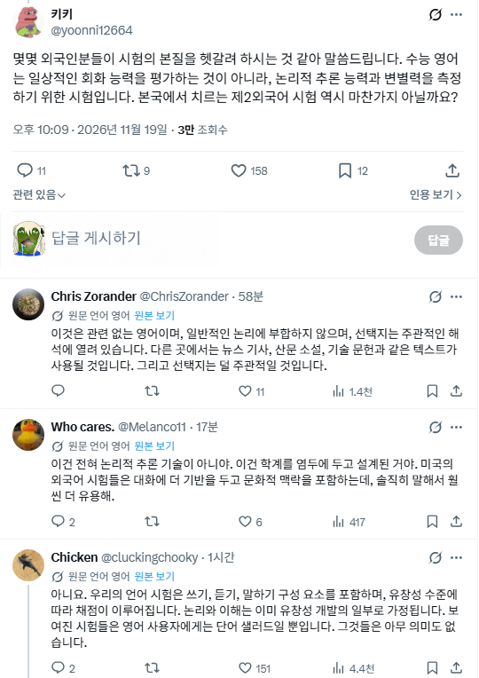

https://x.com/hwj0104/status/2123340803112366221




https://x.com/hwj0104/status/2123340803112366221
줄은 세워야 할 거 아녀 ㅋㅋㅋㅋㅋㅋㅋ
영어의 탈을 쓴 그냥 다른 괴랄한 테스트라고 봐야지. 영어든 한국어든 법조항 문장들 보면 이리저리 꼬여있는데 그런 느낌으로 발췌해서 내는거라
점점 고여서 비문학 국어화된지 오래임ㅋㅋ
저러다가 그냥 영어과목 없어지지 않을까 싶더라. 실질적으로 영어 능력을 보는게 아니라 특정 형태의 논리/추론능력을 보고있는데, AI로 인해 영어의 필요성마저 줄어들면 그냥 그대로 언어영역만 남기고 사라지거나, 대학들이 언어영역에 가점을 한참 크게 주는식으로 사실상 죽은 과목이 되지 않을까.
미국에서 SAT나 GRE 킬러 문항으로 나올만한 문제라고 생각함. 그걸 한국 고등학생들이 풀어야 하냐는 별개의 문제지만
ㅋㅋㅋ그럼 수능 언어영억도 한국어 유창하게 할 줄 알면 다 만점 맞아야되냐? ㅋㅋㅋㅋㅋㅋㅋ 수학능력시험이라는 시험의 의미를 아예 이해를 못하는 애들이 왤케 많아ㅋㅋㅋ
근데 모국어 시험과 외국어 시험은 차이가 있는게 맞음.
아무 의미없는, 선별을 위한 선별ㅇㅇ
이런 쓸모없는 스킬을 키우느라 얼마나 많은 시간과 노력이 낭비되고 있는걸까
수능은 대학에서 공부할 능력을 키우는 시험이 아니게 된지가 오래됨
대학 들어가면 처음부터 다시 함 과목 교육을 ㅋㅋㅋ
근데 수능 공격하면 정시예찬론자들한테 다굴당함 ㅠㅠ
성실도니 게임능력이니 이런 건 직장생활 능력 추롱에 더 적합한듯
이럴거면 걍 수능으로 입사시험 시키자고 생각한 적 있음
진짜 대학 공부를 위한 영어 시험이 궁금하면 토플이나 GRE 문제 보셈
우리나라 교육이 오히려 국민들 평균 능력을 깍아먹는 대표적인 사례라고 생각해.
영어를 저런식으로 안가르쳤으면 교육 받는 사람의 절반 이상은 영어를 의사소통에 사용 할 수 있었을 것이고, 그랬으면 글로벌로 나가는 한국 인재가 더 많아졌을 것 같아.
스도쿠가 수학이 아니듯이 저건 영어가 아니야.
현장에서 진짜 영어 보다가 자살 마려웠던 건 저게 처음이었음
난이도 문제로 저렇게 꼬아놓은거면 미국에서 쓰는 비문학 지문 가져오면 안되나
34번 저 지문은 애초에 문장 자체가 이상하네. 원어민들보고 읽어보라 해도 뭔 소린가 하겠는데.
어느부분이이상함?
But it adds to it a ~
이딴 문장이 어딨나 싶은데
영어아님 근데어쩌라고
영어로 시험봐서 다100점맞으면 줄못새우잖슴~
그러니깐 통과 비통과로 의사소통 장애여부 판단만 하는게 합리적일듯
그러고 국어 수학 존나 어렵게 내서 갈라치기하고
까는건 아무나 하지~
별수있나 변별력 때문에 하는거지